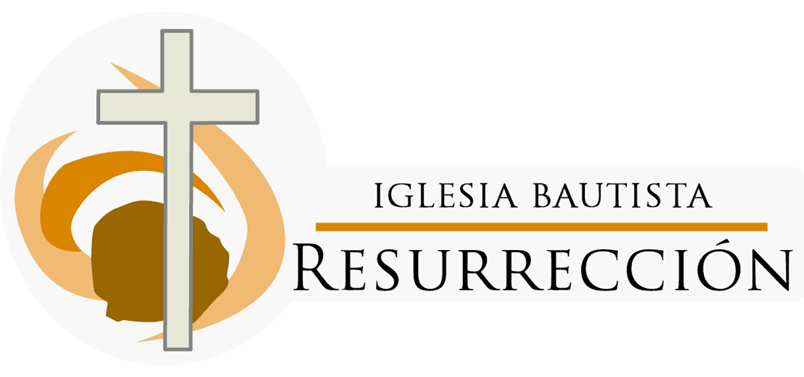

Inicio
Calendario
¿Quines Somos?
Contacto
Misiones
Horarios
10:00-10:30 Devocional y Periodo de Oración
10:30-12:00 Escuela Dominical
12:15-14:00 Culto Dominical
18:00-19:00 Culto Vespertino
Miercoles 19:00 Culto de Oración